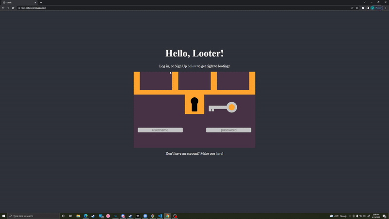
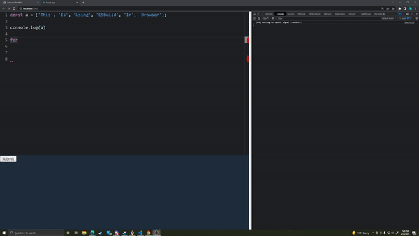

My Projects
Loot Roller
This was my first full stack project, Loot Roller. I made it completely from scratch in Vanilla JS and CSS
With persistant user data and authentication, this was a great project. Every item generated is unique. Your account securely hashed, and I used the minimum amount of dependencies that I needed. I learned tons from this project. I previously didn't understand ci/cd or any deployment concepts, but with this, I had the chance to implement it myself.
GitHub RepoESBuild Browser Repl
This REPL uses Typescript, React, a Redux store, and ESBuild to get the work done. I followed a course to produce this, and learned many things about Typsecript along the way! I learned a bunch about redux and how to use its stores. I also learned how to utilize interfaces better with Typescript to have more safety in my apps. On top of all of that, you're able to use import statements to bring in libraries and modules from UNPKG to use as well.
GitHub Repo